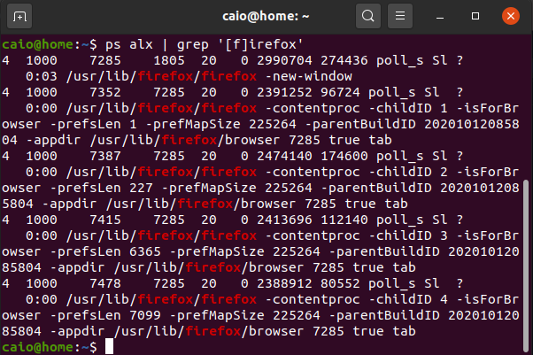

An introduction to how processes work in Linux and their role on Docker
oct 4, 2020
One of the major concepts that people miss when studying docker are processes. While a lot of people try to understand the difference between a container and a VM, a much more interesting question is what is the difference between a container and a process. To understand that first you need to understand what a process is, and that's what we are going to in this post.
Think about a regular day using a computer. You probably open several programs and just and just forget about what the computer is doing. What the computer is doing under the hoods is starting a new process for each program you start. That program itself can start other processes. Lets think about a browser, when you click on the firefox icon it sends a system call to the linux kernel that will initiate the chrome program. The command will start a new process and this is why the the usual definition of a process is a program in execution. This firefox process can or cannot start new processes that can initiate new processes by themselves, forming a tree of processes. Lets see how this works in a practical manner on the shell.
Formatting the data to a human readable table we have the following:
| PID | PPID | Command |
|---|---|---|
| 7285 | 1805 | usr/lib/firefox/firefox -new-window |
| 7352 | 7285 | /usr/lib/firefox/firefox -contentproc -childID 1... |
| 7387 | 7285 | /usr/lib/firefox/firefox -contentproc -childID 2... |
| 7415 | 7285 | /usr/lib/firefox/firefox -contentproc -childID 3... |
| 7478 | 7285 | /usr/lib/firefox/firefox -contentproc -childID 4... |
The PID is the process ID, the PPID is the parent process ID and the Command is the command that launched the process. If rou run the first command on Linux it will open Firefox and as you can see this process started several other process as its ID (7285) is the parent ID from the other processes. Now that we know how a process starts we have to understand what it does and what problem is it trying to solve.